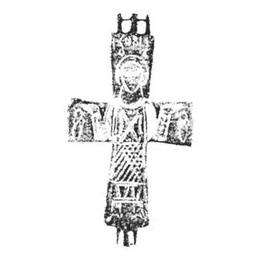
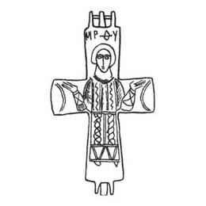

Catalog › CE-0251 · KOR2003-I.2.10
Encolpion întreg cu sfânt Orantă (Gheorghe) pe față și Maica Domnului Orantă pe revers, linii adâncite
sec. X–XII (901–1200) · Kiev, Ucraina
double-sided reliquary cross (enkolpion), aramă; c. X–XII (901–1200); found at Kiev, Ucraina.




Identificare
- Categorie
- Encolpion bivalv (relicvar)
- Material
- Aramă
- Tehnică
- Turnare în relief; Gravare (incizie)
- Stare
- Întreagă
- Dimensiuni
- Î 63 × L 42 mm
Iconografie
- Avers
- Sf. Gheorghe
- Descriere avers
- Encolpion întreg, cu capete drepte, ușor lărgite, cu imagini și inscripții adâncite pe ambele valve. Pe valva de față imaginea unui sfânt în picioare în poziție de Orantă, în veșmânt bogat ornamentat; pe capetele laterale ale valvei figurine mici schematice, iar pe capătul de sus inscripția ΓЕ|ОР|Г|ІОС.
- Revers
- Maica Domnului Orantă
- Descriere revers
- Pe valva de revers imaginea în picioare a Maicii Domnului Orantă, de asemenea în veșmânt accentuat ornamentat; pe capetele laterale ale valvei arcuri de aceeași mărime, iar pe capătul de sus, deasupra capului Maicii Domnului, inscripția МР ΘY.
- Inscripții
- ΓЕ|ОР|Г|ІОС; МР ΘY
- Limba
- Greacă
Datare și atribuire
- Datare
- sec. X–XII (901–1200)
- Centru
- Necunoscut
- Tipologie
- Korzukhina–Peskova 2003, tip I 2
Descoperire
- Localitate
- Kiev
- Țară
- Ucraina
- Context
- Biserică / mănăstire
- Anul
- 1938
Păstrare și referințe
- Bibliografie
- G. F. Korzukhina, A. A. Peskova, Древнерусские энколпионы. Нагрудные кресты-реликварии XI–XIII вв., Sankt-Petersburg, 2003 [Korzukhina–Peskova 2003], p. 54, cat. nr. I 2/10, reprodusă la Табл. 10 (planșe, p. 252). Bibliografie citată în sursă: Каргер 1949, рис. 9 верхний (greșit semnat ca provenind din bordeiul VIII în loc de bordeiul VII); Каргер 1950, 18, рис. 15 верхний ряд; Каргер 1958, 309; Куницький 1990, 109, рис. 1, 1 (după Каргер 1949); Корзухина, архив ф. 77, д. 14, л. 5.
- Figura
- Табл. 10
- Planșe
- Korzukhina–Peskova 2003, Табл. 10 (planșă fără paginație proprie în PDF; p. 252 tipărită)
- Observații
- Datare după Peskova: sec. X–XII. Circumstanțe: Săpături 1938 în curtea fostei mănăstiri Mihailovski cu Acoperiș de Aur, sub conducerea lui M. K. Karger; groapă lângă peretele estic al bordeiului VII. Se consideră pierdut în timpul războiului 1941–1945. Din cauza inscripțiilor neclare de sub desenele din lucrările lui M. K. Karger (1949, 1950), G. F. Korzuhina a socotit encolpionul ca provenind din „bordeiul pictorului”, adică bordeiul VIII. Coordonate: nu sunt date în sursă.
Citare: Corpus Encolpiorum, CE-0251, Encolpion întreg cu sfânt Orantă (Gheorghe) pe față și Maica Domnului Orantă pe revers, linii adâncite, https://vitaliejosanu1979-ux.github.io/primul-meu-proiect/piese/KOR2003-I.2.10/ (accesat 2026-10-17).